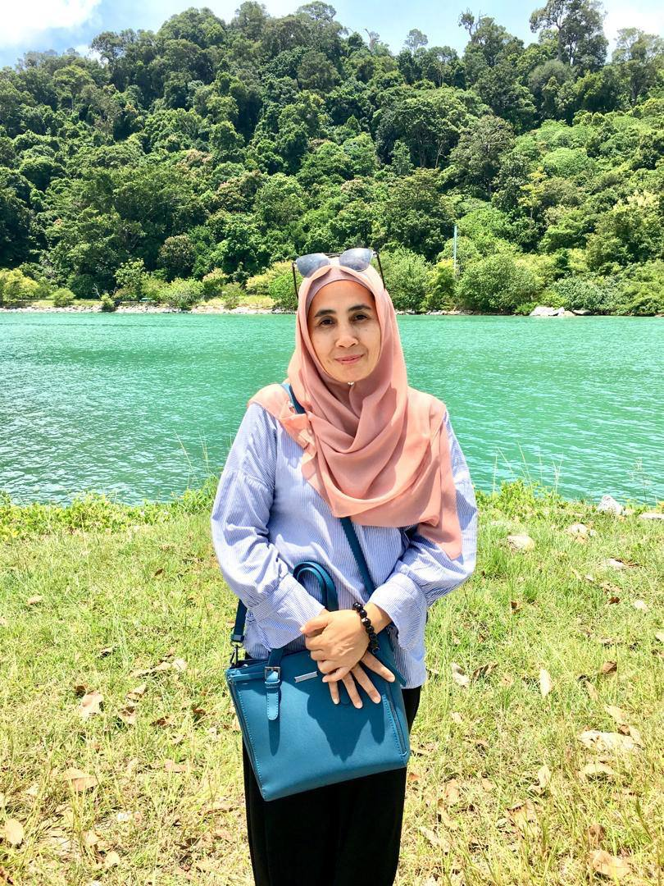
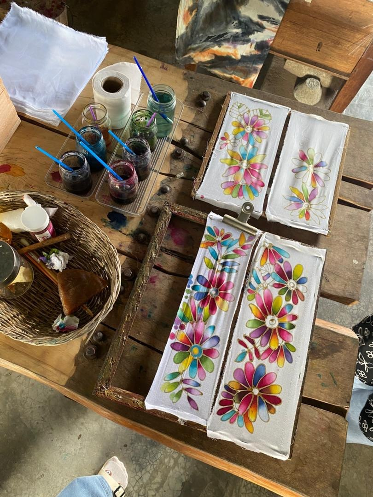
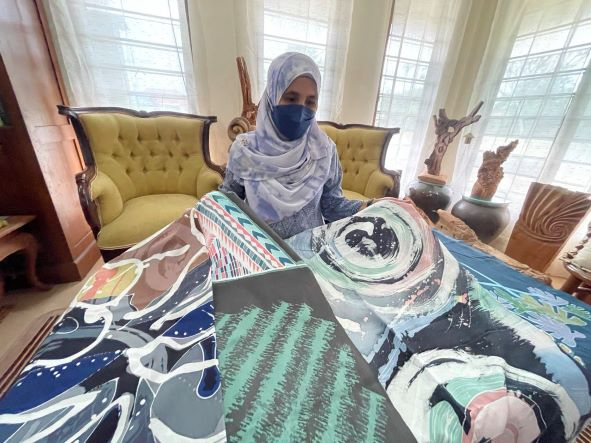
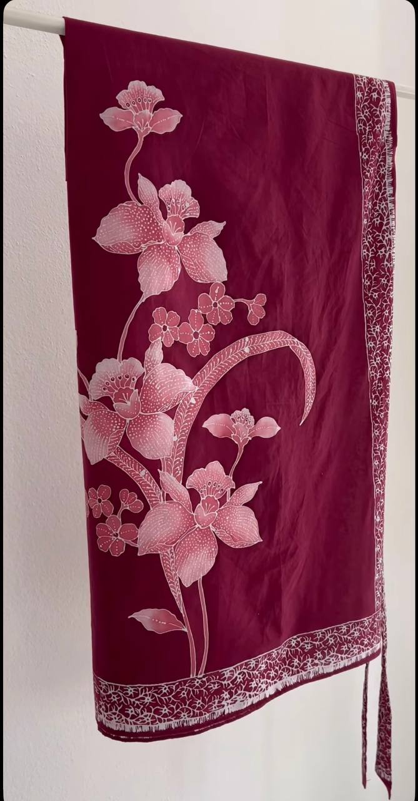

zarina salleh

Tentang Saya
Selamat datang. Saya Puan Zarina Binti Salleh, seorang anak jati Perlis yang telah menyerahkan seluruh jiwa dan raga saya kepada keindahan seni batik.
Pada usia 56 tahun, saya memandang ke belakang dengan rasa syukur atas perjalanan seni yang telah membentuk identiti saya hari ini.
Langkah saya dalam dunia ini bermula di Kraftangan Malaysia Cawangan Perak. Di sanalah saya menimba ilmu, menajamkan bakat, dan jatuh cinta pada setiap titisan lilin di atas kain.
Berbekalkan ilmu tersebut, saya dan suami mengasaskan Batik Inderawasih. Kini, sudah 33 tahun kami bersama-sama mengemudi perniagaan ini, mengubah sebuah minat menjadi warisan keluarga yang mampan.
Sebagai pemilik dan Pereka Batik utama, tugas saya bukan sekadar menghasilkan kain, tetapi menceritakan sebuah kisah melalui corak.
Apa yang membezakan Batik Inderawasih adalah keberanian kami untuk tampil dengan rekaan yang berbeza daripada corak pasaran sambil mengekalkan keaslian buatan tangan.
Sepanjang tiga dekad ini, perjalanan kami tidak selalunya mudah. Kami pernah diuji dengan persaingan sengit, faktor cuaca, dan cabaran ekonomi.
Namun, cabaran-cabaran inilah yang mengajar saya erti ketabahan dan memaksa saya untuk terus berinovasi tanpa meninggalkan akar tradisi.
Besar harapan saya agar Batik Inderawasih terus berkembang dan diiktiraf sebagai destinasi tarikan utama pelancong di Negeri Perlis.
“Batik bukan sekadar corak, ia adalah helaian nafas dan budaya kita.”
Galeri Batik


